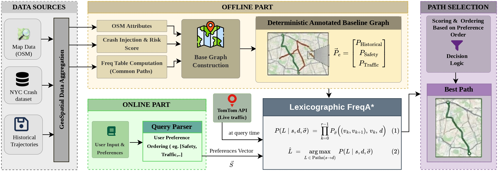
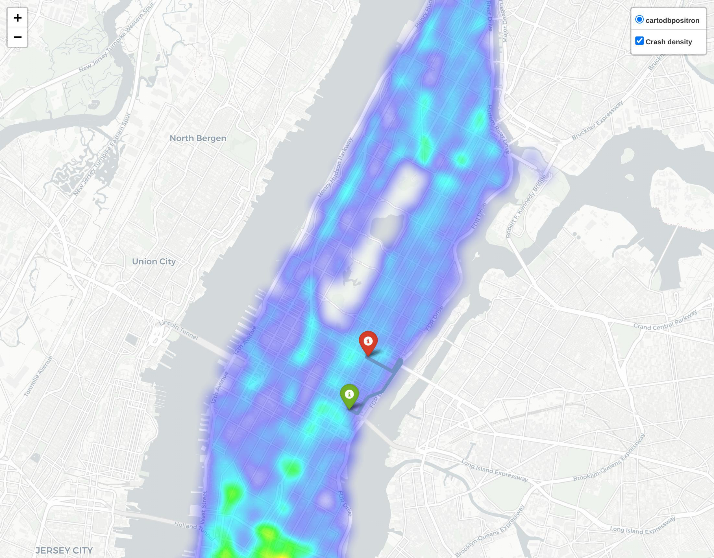
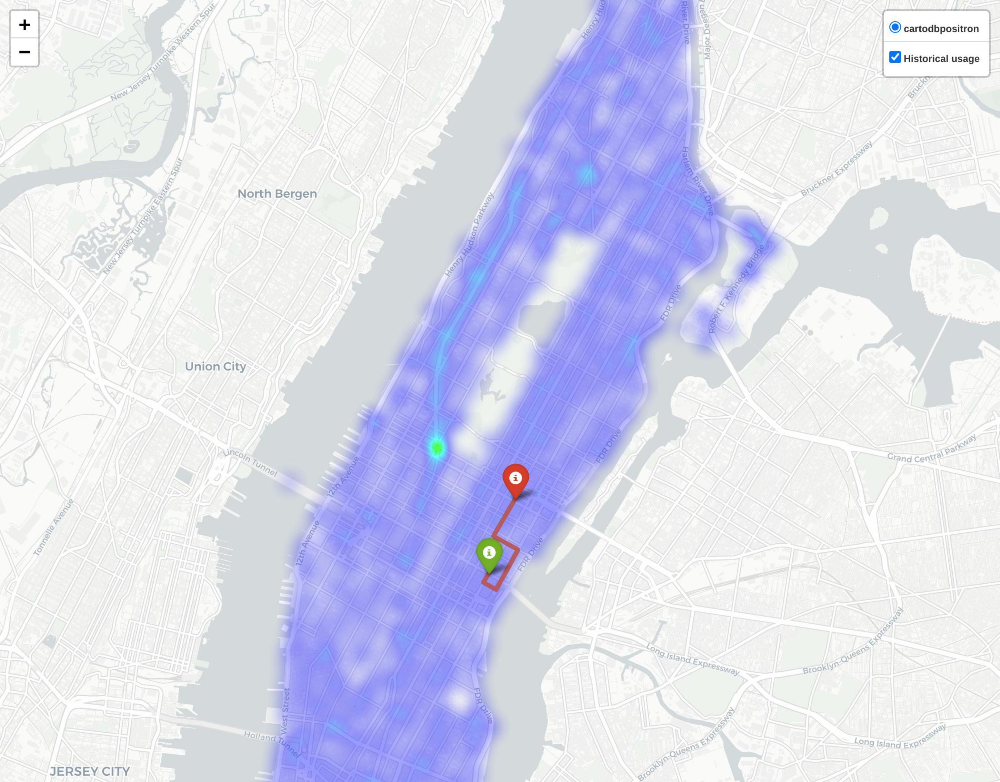
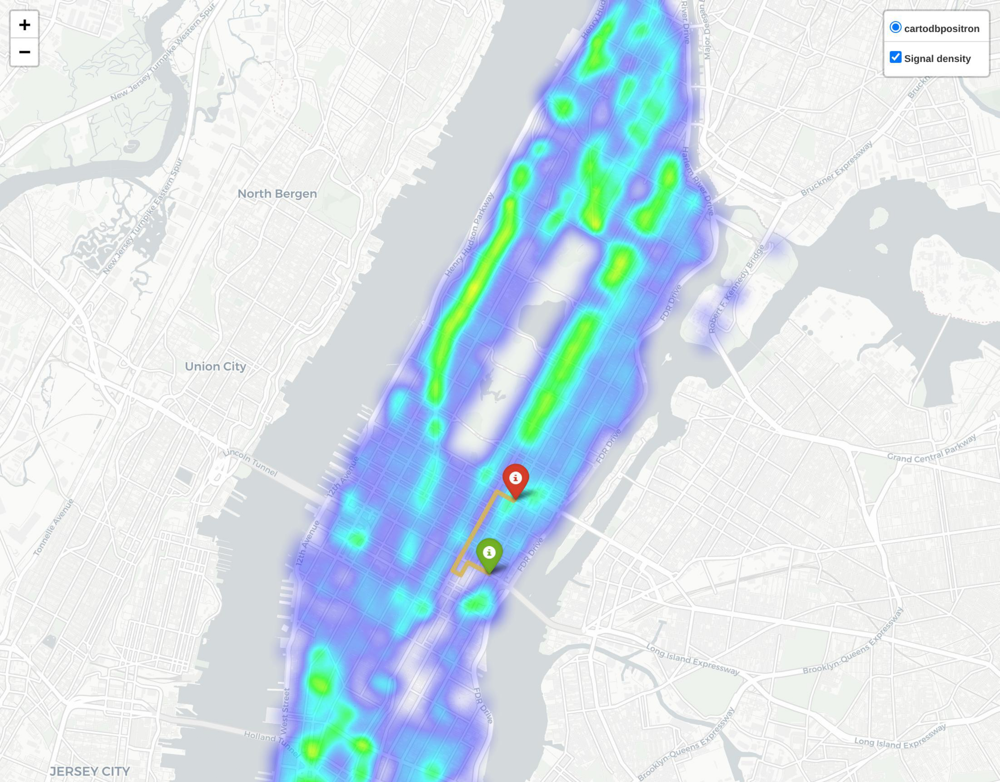
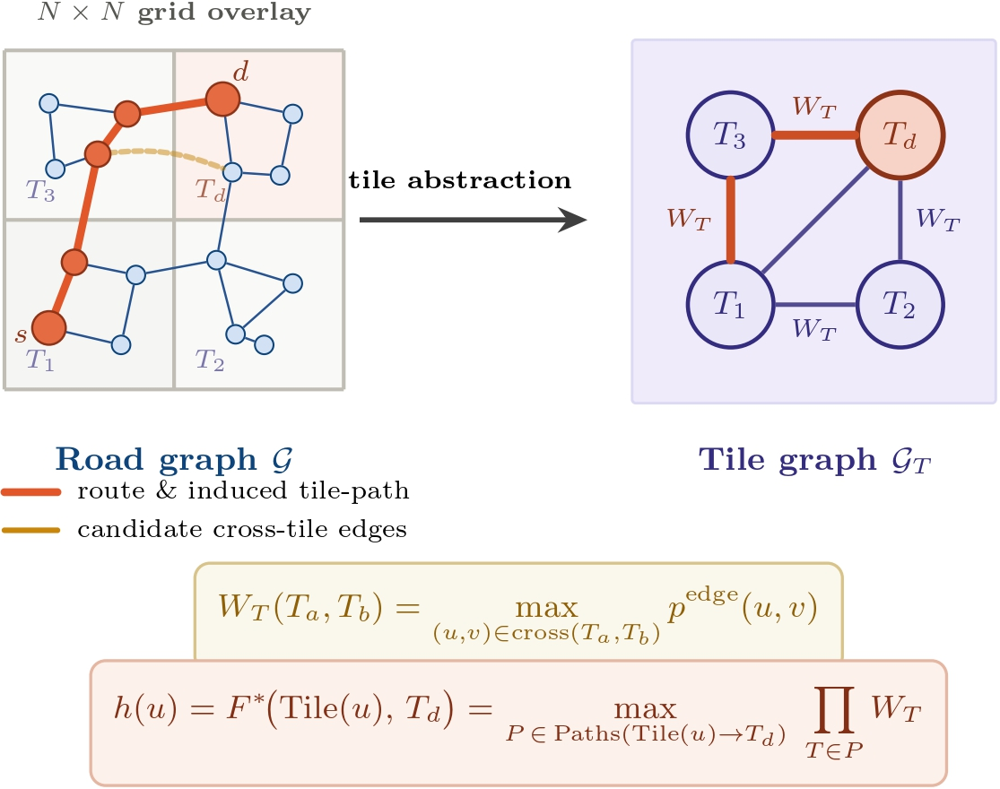
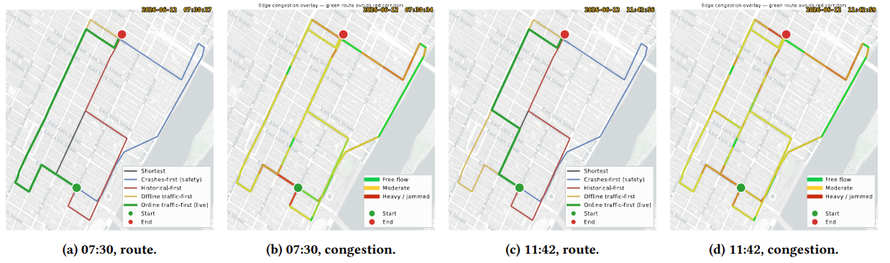

Result 1 · The Order Matters
Different priorities → materially different routes
_page-0001.jpg)
_page-0001.jpg)
One O–D pair, four orderings. Each route wins on its own objective; the three offline routes are almost edge-disjoint (pairwise overlap ≤ 2.6%).
08
Priority-aware urban navigation from open municipal & real-time data
Every major service folds distance and traffic into one travel-time estimate, then exposes a handful of binary toggles:
You cannot ask for safer streets, fewer traffic signals, or the roads drivers actually take — and you cannot say which matters more when they conflict.
A parent at night wants the safest route above all.
A courier wants the fastest route that still dodges congestion.
A cyclist wants to avoid signal-heavy corridors.
So we let users rank their criteria, and we return one route that honors that ranking; never trading a higher-priority preference for a lower one.
Safety, popularity, congestion, signal delay live in heterogeneous external data,crash records, trip histories, live feeds, map tags — each in its own units. They must be put on common ground.
Prior work does one of two things: collapse criteria into a weighted sum — which can silently override your top preference — or hand you a Pareto menu to pick from. Neither honors a stated order, at interactive speed.

Offline: convert four urban data sources into an annotated road graph + precompute tile heuristics. Online: the user's priority order (and optional live traffic) feed the search.



Every source becomes a per-segment score in (0,1]. A route's score is the product of its edge scores.
Ask for safety-first, and the search is pushed away from the crash-dense corridors — the route physically avoids the red zones.
The same holds for congestion and signals: the scoring is what makes the route dodge what you're trying to avoid.
The fields are distinct, so different orderings give genuinely different routes.
Each route carries a score vector — one component per preference. Compare on the top preference first; break near-ties (within ε) by the next. Priorities never multiply, so a lower one can't overrule a higher one.
A coarse tile grid gives an optimistic estimate of the best score to the destination — an admissible A* heuristic that focuses the search. This is where the 80% node reduction comes from.

The road graph coarsened to a tile graph — heuristic precomputed once per destination, reused for any ordering.
Provably optimal (proofs in paper) — any order served with no offline recomputation.
One O–D pair, four orderings. Each route wins on its own objective; the three offline routes are almost edge-disjoint (pairwise overlap ≤ 2.6%).
_page-0001.jpg)
_page-0001.jpg)
One O–D pair, four orderings. Each route wins on its own objective; the three offline routes are almost edge-disjoint (pairwise overlap ≤ 2.6%).
A 97.8× speedup over the same-objective baseline (FreqDijkstra, 41 ms) — while matching the provably optimal route on every one of 197 queries.
| Method | Nodes | Time |
|---|---|---|
| Dijkstra | 2348.8 | 4.07 |
| A* | 741.3 | 2.07 |
| FreqDijkstra | 1249.1 | 41.0 |
| FreqA* (ours) | 249.6 | 0.42 |
| Lex-FreqA* (ours) | 249.3 | 1.13 |
256×256 grid, 197 queries. Time in ms.

Traffic-first query at two times (TomTom live feed). Routes keep to free-flowing edges and avoid congested corridors — re-evaluated live, not cached. Per-query search stays at 2.2 ms.
Preference-first routes are longer than the shortest path — a real, interpretable cost, not inefficiency.
| Route | vs shortest |
|---|---|
| Historical-first | +20.3% |
| Safety-first | +60.1% |
| Traffic-first | +63.5% |
Cap the detour at β × shortest path — one feasibility check, no change to the search.
| β | Detour | Safety |
|---|---|---|
| ∞ | +62% | 100% |
| 2.0 | +40% | 85% |
| 1.25 | +13% | 52% |
β = 2.0 halves the detour, keeps 85% of the safety.
Crucially — none of this touches the search guarantees or the efficiency results, which hold for any preference field.
and get a provably optimal, priority-respecting route in under a millisecond, from open municipal data, that adapts to live traffic.
Code & data: github.com/UA-AI-Robustness/lexicographic-freqastar
Thank you. Questions?
Sarker et al. — RL-based multi-objective route recommendation (MASS 2020)
Hung et al. — customizable frequency-guided search (FreqDijkstra)
Liu et al. — driver preferences via inverse RL
Guo et al.; Tian et al. (DRPK) — learned routes from trajectories
Martins — multi-objective shortest paths (Pareto)
Kriegel et al.; Shekelyan et al. — route-skyline search
Hu et al.; Wang et al. — crash-risk / congestion-aware routing
Dijkstra; Hart et al. (A*); ALT / CH — classical search
Full citations in the paper. This slide is for Q&A only.